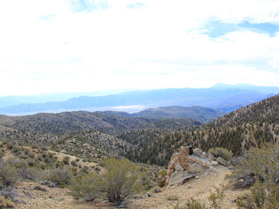
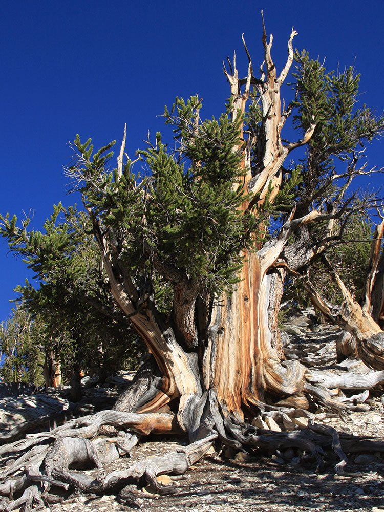
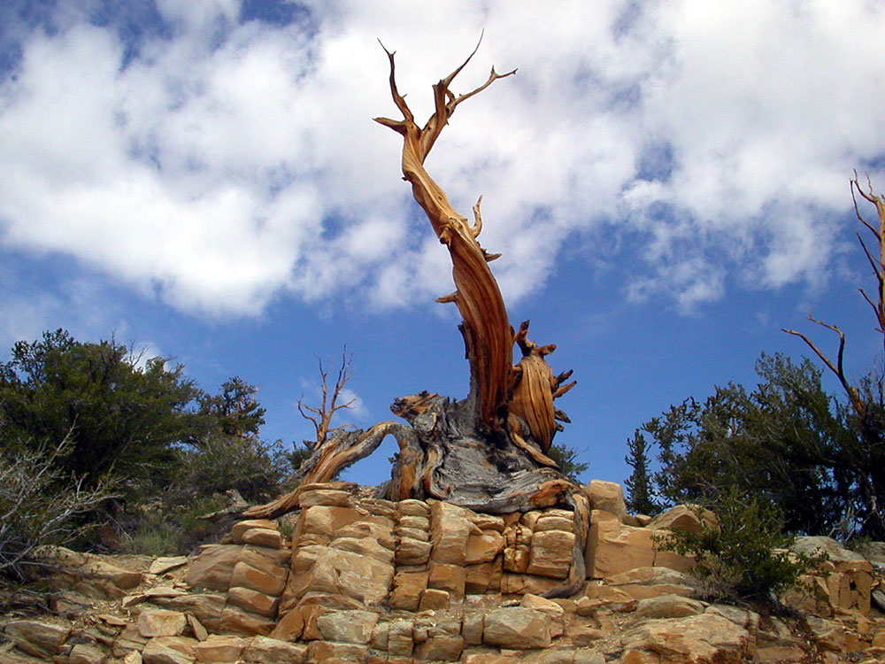
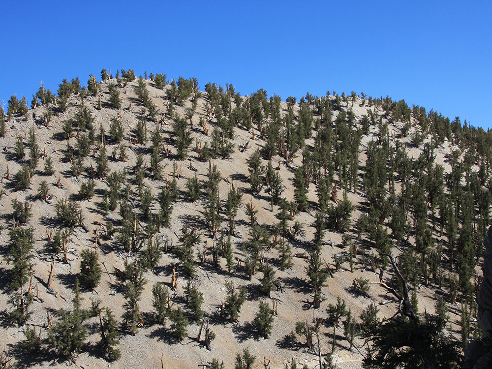

Home to the oldest trees in the world, bristlecone pines, some exceeding 4000 years of age and exhibit spectacular growth forms of twisted and beautifully colored wood and includes several self guided trails
Ancient Bristlecone Pine Forest Scenic Byway closes at the Sierra View Gates with winter snowfall. While closed to vehicles, this is a popular route for cross country skiers and snowshoes.
The visitor center at Schulman Grove is only open in summer.
How to Get There
From Bishop (38 mi): Head east on W Line St toward Fulton St. Turn right onto US-395 S/S Main St. Continue to follow US-395 S. Turn left onto CA-168 E. Turn left onto White Mountain Rd. Continue straight to stay on White Mountain Rd. Turn right. Turn left.
Overview
The Ancient Bristlecone Pine Forest is a protected area of about 44 square miles in the White Mountains east of Bishop, managed by the Forest Service as part of Inyo National Forest. Twisted, weathered Great Basin bristlecone pines grow here at elevations of roughly 9,800 to 11,000 feet, and some are the oldest living trees on Earth. The forest’s “Methuselah,” about 4,850 years old, is the oldest known non-clonal organism in the world, and its location is deliberately unmarked to protect it. Visitors come to walk among the ancient trees at Schulman Grove and Patriarch Grove and enjoy the high-desert views of the Owens Valley and the Sierra Nevada.
Access
The forest is reached by driving from Bishop south on US-395, then taking CA-168 east to White Mountain Road, which climbs to Schulman Grove, about 30 miles from Bishop. Patriarch Grove is about 13 miles farther north on an unpaved road at 11,000 feet, with sharp rocks that can cause flat tires, so drive slowly. The groves are day-use only, open from 6 am to 10 pm, and camping is not allowed in the forest, though Grandview Campground is on the way up. There is no piped or natural water, cell coverage is limited, and the nearest food and fuel are in Big Pine.
Seasons
The forest is generally open from mid-May through the end of November, weather permitting, and summer is the main visiting season with ranger talks from mid-June through Labor Day. Weather at this elevation can change quickly, so bring layers. Fall brings cold mornings and few visitors, and snowfall closes the road at the Sierra View Gates, ending vehicle access for the year. While the road is closed, it is a popular route for cross-country skiers and snowshoers, and the Schulman Grove visitor center is open only in summer.
Things to Do
- Schulman Grove: the visitor center and three self-guided trails, with ranger talks from mid-June through Labor Day. The 4.5-mile Methuselah Grove loop begins here.
- Patriarch Grove: reached by the last 13 miles of unpaved road at 11,000 feet, home to the world’s largest bristlecone, the Patriarch Tree, and a nature trail.
Visitor Centers
The Schulman Grove Visitor Center is the main information point, with exhibits and interpretive programs, and the Discovery Trail and Methuselah Trail begin nearby. It is open only in summer, and trails, roads and restrooms remain open with limited services when it is closed. The original building was destroyed by arson in 2008 and has since been rebuilt. The Patriarch Grove has a restroom and picnic area but no staffed facility.
Camping and Lodging
Camping is not allowed in the forest, but the Forest Service’s Grandview Campground is on the way up White Mountain Road. For motels and hotels, Bishop, about 30 to 38 miles away, has the widest selection in the Owens Valley, and Big Pine has smaller lodging options and the nearest food and fuel. Lone Pine and Mammoth Lakes also offer lodging along US-395.
This article uses material from the Wikipedia articles "Ancient Bristlecone Pine Forest", which are released under the Creative Commons Attribution-Share-Alike License 3.0. Additional information from the U.S. Forest Service.
Featured Trails

Patriarch Grove Trail
0.4 mile loop, 78 feet
This beautiful and quiet grove in the Ancient Bristlecone Pine Forest includes the world's largest bristlecone pine, the Patriarch Tree
Schulman Grove
Discovery Trail
0.9 mile loop, 265 feet
Features Ancient Bristlecone Pines, interpretive signs, and rest benches along the trail
Methuselah Trail
4 miles loop, 761 feet
The Methuselah Tree is along this trail, but there is not a sign that points it out. This trail can be combined with the Bristlecone Cabin Trail




